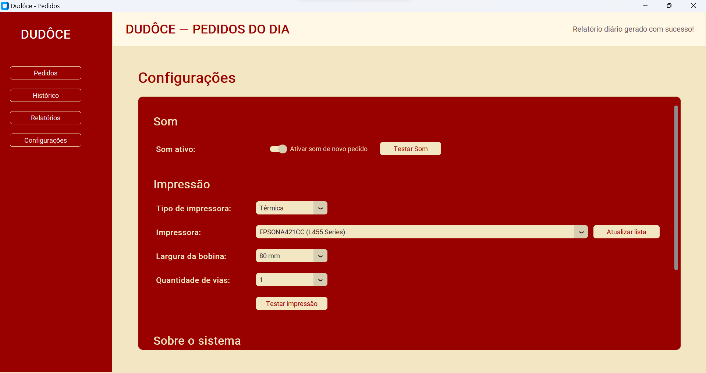

O problema
Acompanhar pedidos manualmente aumenta o risco de demora, esquecimento, duplicidade e perda de informações durante o atendimento.
CASE DE AUTOMAÇÃO COM PYTHON
Sistema desenvolvido em Python para receber, organizar e imprimir pedidos em tempo real, conectando o atendimento do estabelecimento ao Firebase e às impressoras do Windows.

Recebimento automático, sinalização de novo pedido e separação por status.
VERSÃO 1.0 EM EVOLUÇÃO
Esta é uma versão funcional do sistema e continua passando por evolução. O trabalho atual envolve correção de bugs, refinamento da experiência, melhoria dos fluxos, ampliação da compatibilidade com impressoras e ajustes nos relatórios e controles operacionais.
VISÃO DO PROJETO
Acompanhar pedidos manualmente aumenta o risco de demora, esquecimento, duplicidade e perda de informações durante o atendimento.
Manter um aplicativo desktop conectado ao Firebase para identificar novos pedidos, alertar o atendente e organizar impressão, histórico e relatórios.
Arquitetura do projeto, interface desktop, integração em tempo real, impressão no Windows, persistência local, relatórios e empacotamento do sistema.
FLUXO COMPLETO
O sistema acompanha o pedido desde o registro no Firebase até a impressão, mantendo os dados disponíveis para consulta e reimpressão.
DEMONSTRAÇÃO DO SISTEMA
Acompanhe o fluxo completo: recebimento do pedido, impressão, histórico, relatórios e configurações.
Do pedido realizado no site ao acompanhamento dos resultados em um único sistema.
O cliente confirma os produtos, dados de entrega, pagamento e observações.
As informações são armazenadas e ficam disponíveis para o aplicativo desktop.
Um card com borda verde aparece e o aviso sonoro sinaliza o novo pedido.
O atendente visualiza cliente, itens, total, horário e demais informações.
O comprovante não fiscal é preparado conforme impressora, papel e quantidade de vias.
O pedido passa para impressos e permanece disponível para consulta e reimpressão.
RECURSOS PRINCIPAIS
Novos pedidos aparecem automaticamente, sem atualizar a tela manualmente.
Borda verde e aviso sonoro ajudam o atendente a identificar rapidamente uma nova solicitação.
Suporte a impressoras comuns e térmicas, bobinas de 58 mm e 80 mm e múltiplas vias.
Separação entre pendentes e impressos para reduzir confusão e duplicidade operacional.
Consulta de pedidos anteriores e nova impressão usando os dados já armazenados.
Resumo diário, mensal e anual com pedidos, valores, ticket médio e produtos vendidos.
IMPRESSÃO E CONFIGURAÇÃO
O usuário escolhe a impressora, o tipo de impressão, a largura da bobina, a quantidade de vias e o uso do aviso sonoro. As configurações ficam salvas localmente para evitar ajustes repetidos a cada abertura do aplicativo.

ARQUITETURA E TECNOLOGIAS
A organização facilita manutenção, localização de erros e inclusão de novas funcionalidades durante a evolução do sistema.
src/
├── modelos/
├── controladores/
├── servicos/
├── ui/
└── main.pyTELAS DO SISTEMA
Clique em uma imagem para ampliar.
RESULTADO
O OrderFlow Desktop recebe pedidos em tempo real, alerta o atendente, organiza os registros por status, imprime comprovantes e preserva o histórico para consulta, relatórios e reimpressões. O projeto também foi preparado como executável e instalador, permitindo o uso em computadores Windows sem exigir que o cliente instale Python.